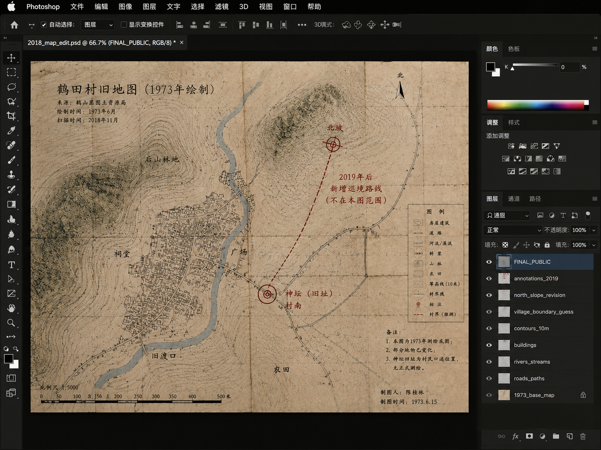

Patrol is an experimental digital narrative that explores archives, interfaces, and the instability of recorded history.
Presented through a simulated desktop environment, the work invites players to investigate documents, messages, maps, and photographs in order to construct their own interpretation of events.
Rather than offering a single truth.
《巡境》是一部实验性的数字叙事作品，探讨档案、界面以及被记录历史的不稳定性。
通过模拟桌面环境，本作邀请玩家自行调查文件、信息、地图和照片，
从而构建对事件的个人解读，而非接受一个绝对的真相。
XÚNJÌNGThe Patrol
/
当仪式成为路线，When the ritual becomes a route,
谁在行走，谁在凝视？who walks, and who watches?
- 村民访谈（老李、阿珍、阿勇）- Village Interviews (Old Li, Ah Zhen, Ah Yong)
- 巡境路线实地记录- Route Field Records
- 祭祀物件测量- Ritual Objects Measurement
- 档案材料整理- Archive Materials Sorting
- 拍摄计划- Filming Plan
⚠️ 重读三遍再下结论
⚠️ Read three times before concluding
